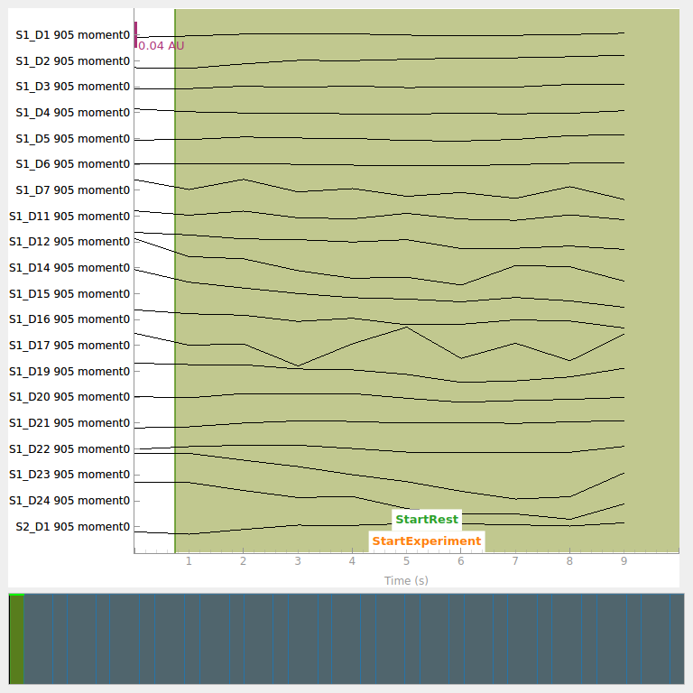
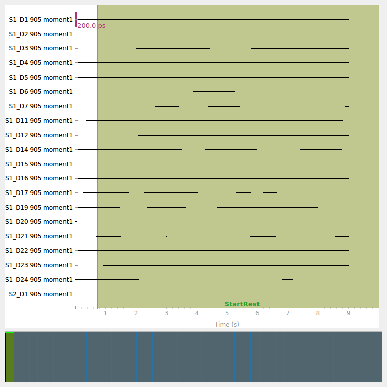
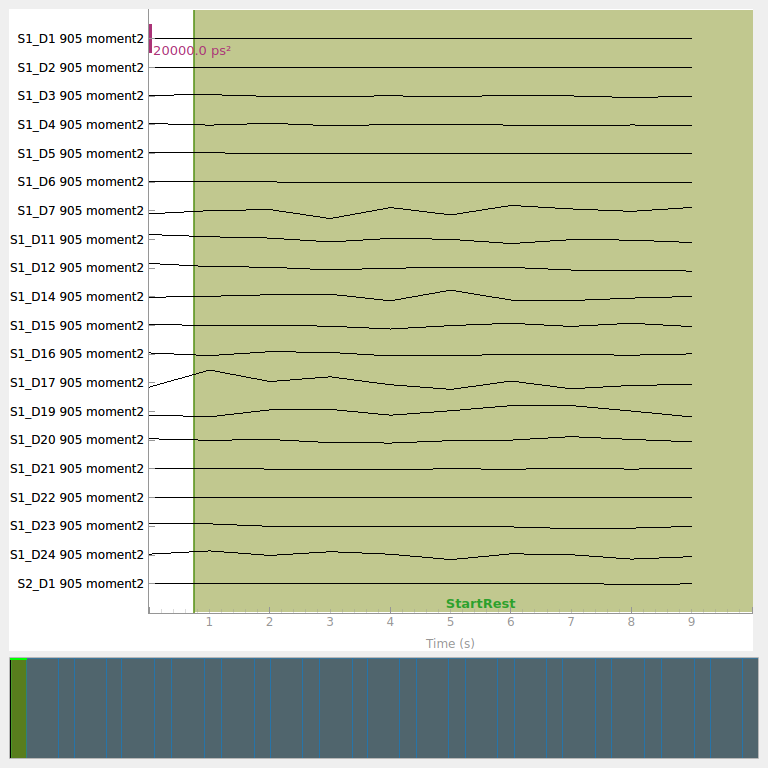
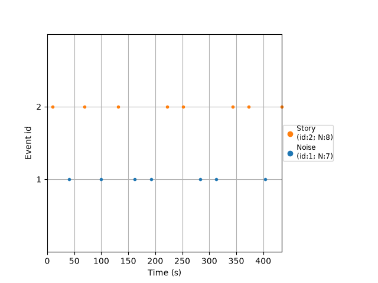
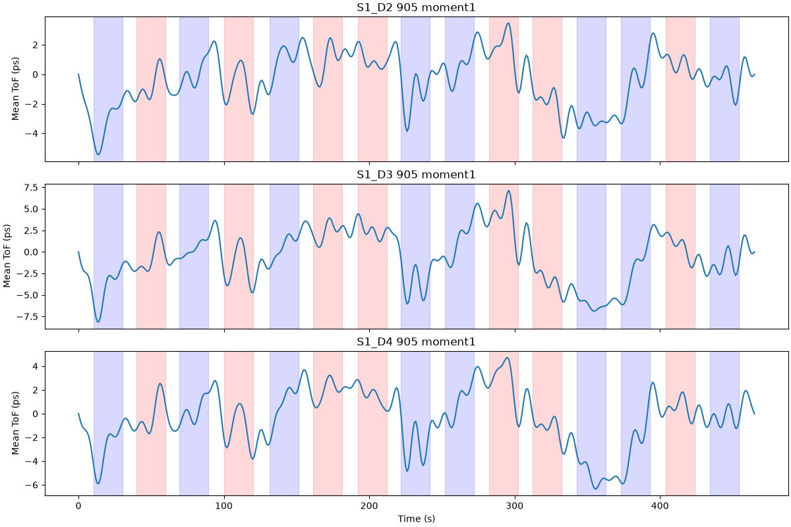
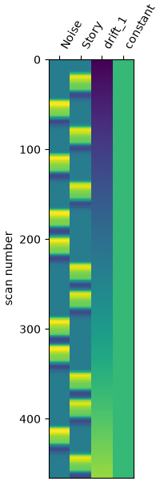
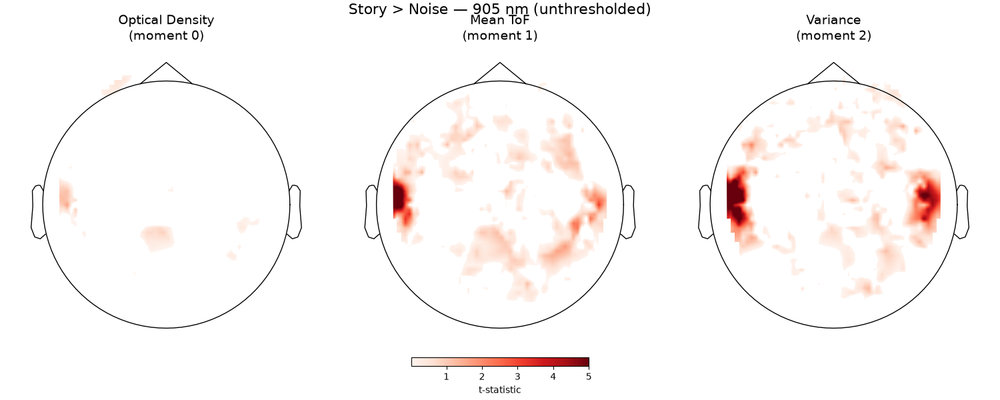
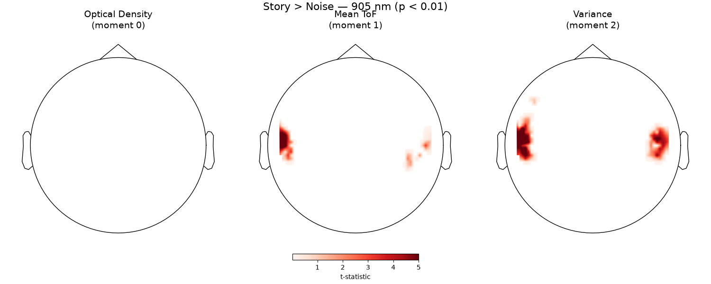

Note
Go to the end to download the full example code or to run this example in your browser via Binder.
Auditory GLM Analysis with TD-fNIRS Statistical Moments#
This example demonstrates how to analyze time-domain (TD) functional near-infrared spectroscopy (fNIRS) data using the statistical moments representation. We run a GLM on all three moments — intensity, mean time of flight, and variance — and compare the Story < Noise contrast across them.
The dataset was collected with the Kernel Flow 2 system, a high-density TD-fNIRS device with ~3500 channels. The task is an auditory paradigm with alternating blocks of Story listening, Noise, and Silence.
TD-fNIRS systems measure the full distribution of photon travel times (the DTOF). From this distribution, three statistical moments are extracted per channel and stored in the SNIRF file:
Moment 0 (intensity): total photon count — analogous to CW amplitude
Moment 1 (mean time of flight): average arrival time in picoseconds — sensitive to deeper (cortical) absorption changes
Moment 2 (variance): temporal spread of the distribution
See [1] for details on this dataset and the reliability of TD-fNIRS brain metrics.
# sphinx_gallery_thumbnail_number = 4
# Authors: Julien Dubois <https://github.com/jcrdubois>
#
# License: BSD (3-clause)
import h5py
import numpy as np
import pandas as pd
from matplotlib import colors as mcolors
from matplotlib import pyplot as plt
from mne import Annotations
from mne import events_from_annotations as get_events_from_annotations
from mne.io.snirf import read_raw_snirf
from mne.preprocessing.nirs import optical_density
from mne.viz import plot_events, plot_topomap
from nilearn.plotting import plot_design_matrix
from mne_nirs.datasets import openneuro_kf2_audio
from mne_nirs.experimental_design import make_first_level_design_matrix
from mne_nirs.statistics import run_glm
Download and load the data#
We download a single subject’s SNIRF file from OpenNeuro ds006545 and load it with MNE’s SNIRF reader. After loading, we immediately resample to 1 Hz to reduce memory usage (~520 MB raw).
snirf_file = openneuro_kf2_audio.data_path()
raw = read_raw_snirf(snirf_file).load_data().resample(1)
sphere = (0.0, -0.02, 0.006, 0.1)
Loading /home/circleci/mne_data/openneuro_kf2_audio/sub-bed8fefe_ses-1_task-audio_nirs.snirf
Found jitter of 0.000069% in sample times.
Reading 0 ... 1749 = 0.000 ... 465.241 secs...
Explore TD moment channel types#
The SNIRF file contains three types of TD moment channels for each source-detector pair and wavelength. Let’s see what we have.
Channel types and counts:
fnirs_td_moments_intensity: 2330
fnirs_td_moments_mean: 2330
fnirs_td_moments_variance: 2330
Each source-detector pair × wavelength has 3 channels (one per moment), and there are two wavelengths (690 nm and 905 nm).
print(f"\nFirst 6 channel names: {raw.ch_names[:6]}")
First 6 channel names: ['S1_D1 690 moment0', 'S1_D1 690 moment1', 'S1_D1 690 moment2', 'S1_D1 905 moment0', 'S1_D1 905 moment1', 'S1_D1 905 moment2']
Select 905 nm channels for each moment type#
We pick 905 nm channels which have better sensitivity to HbO absorption
changes, and create a separate Raw object for each moment type.
For intensity (moment 0), we convert to optical density using
mne.preprocessing.nirs.optical_density, which computes
\(OD = -\log(I / \bar{I})\). This requires temporarily retyping
the channels to fnirs_cw_amplitude.
moment_types = {
"optical_density": "fnirs_td_moments_intensity",
"mean_tof": "fnirs_td_moments_mean",
"variance": "fnirs_td_moments_variance",
}
raws = {}
for name, ch_type in moment_types.items():
r = raw.copy().pick(ch_type)
if name == "optical_density":
for ch in r.info["chs"]:
ch["coil_type"] = 302 # FIFFV_COIL_FNIRS_CW_AMPLITUDE
r = optical_density(r)
r.pick([ch for ch in r.ch_names if "905" in ch])
raws[name] = r
print(f" {name}: {len(r.ch_names)} channels")
optical_density: 1165 channels
mean_tof: 1165 channels
variance: 1165 channels
Visualize raw traces for each moment type#
Plot each processed moment type to check that the default display scalings are reasonable. Intensity has been converted to optical density; mean time of flight and variance are shown in their native units.



Read event data from the SNIRF stim groups#
MNE’s SNIRF reader only loads the event name (e.g. StartBlock),
not the block type. We use h5py to read the BlockType columns
from the stim groups directly.
raw_ref = raws["mean_tof"]
raw_ref.annotations.to_data_frame()[["onset", "duration", "description"]]
Let’s see what stim groups are in the file:
stim1 b'StartBlock'
stim2 b'StartExperiment'
stim3 b'StartRest'
stim1 has the StartBlock events with BlockType columns:
with h5py.File(snirf_file, "r") as file:
df_start_block = pd.DataFrame(
data=np.array(file["nirs"]["stim1"]["data"]),
columns=[col.decode("UTF-8") for col in file["nirs"]["stim1"]["dataLabels"]],
)
df_start_block[
["Timestamp", "Duration", "BlockType.Story", "BlockType.Noise", "BlockType.Silence"]
]
Now create properly labeled annotations with durations preserved from the stim data, keeping only Story and Noise blocks for the GLM.
mask_story = df_start_block["BlockType.Story"] == 1.0
mask_noise = df_start_block["BlockType.Noise"] == 1.0
mask_block = mask_story | mask_noise
descriptions = np.where(mask_story, "Story", "Noise")
orig_time = raw_ref.annotations.orig_time
block_annotations = Annotations(
onset=df_start_block["Timestamp"].values[mask_block],
duration=df_start_block["Duration"].values[mask_block],
description=descriptions[mask_block],
orig_time=orig_time,
)
for r in raws.values():
r.set_annotations(block_annotations)
events, event_id = get_events_from_annotations(raw_ref)
plot_events(events, event_id=event_id, sfreq=raw_ref.info["sfreq"])

Used Annotations descriptions: [np.str_('Noise'), np.str_('Story')]
<Figure size 640x480 with 1 Axes>
Visualize mean time of flight time courses#
Apply a bandpass filter and look at representative channels to see condition-related modulation of the mean time of flight signal.
raw_filt = raw_ref.copy().filter(
0.01, 0.1, h_trans_bandwidth=0.01, l_trans_bandwidth=0.01
)
# Compute source-detector distances from the loc field (meters -> mm)
source_positions = np.array([ch["loc"][3:6] for ch in raw_ref.info["chs"]])
detector_positions = np.array([ch["loc"][6:9] for ch in raw_ref.info["chs"]])
sds = np.sqrt(np.sum((source_positions - detector_positions) ** 2, axis=1)) * 1000
idx_good = np.flatnonzero((sds > 15) & (sds < 30))
print(f"{len(idx_good)} channels with 15-30 mm separation")
fig, axes = plt.subplots(3, 1, figsize=(12, 8), sharex=True, layout="constrained")
times = raw_filt.times
for ax_i, ch_idx in enumerate(idx_good[:3]):
ch_name = raw_filt.ch_names[ch_idx]
data = raw_filt.get_data(picks=[ch_idx])[0]
axes[ax_i].plot(times, data * 1e12) # convert s -> ps for display
axes[ax_i].set_ylabel("Mean ToF (ps)")
axes[ax_i].set_title(ch_name)
for ann in raw_filt.annotations:
if ann["description"] == "Story":
axes[ax_i].axvspan(
ann["onset"], ann["onset"] + ann["duration"], alpha=0.15, color="blue"
)
elif ann["description"] == "Noise":
axes[ax_i].axvspan(
ann["onset"], ann["onset"] + ann["duration"], alpha=0.15, color="red"
)
axes[-1].set_xlabel("Time (s)")

Filtering raw data in 1 contiguous segment
Setting up band-pass filter from 0.01 - 0.1 Hz
FIR filter parameters
---------------------
Designing a one-pass, zero-phase, non-causal bandpass filter:
- Windowed time-domain design (firwin) method
- Hamming window with 0.0194 passband ripple and 53 dB stopband attenuation
- Lower passband edge: 0.01
- Lower transition bandwidth: 0.01 Hz (-6 dB cutoff frequency: 0.01 Hz)
- Upper passband edge: 0.10 Hz
- Upper transition bandwidth: 0.01 Hz (-6 dB cutoff frequency: 0.11 Hz)
- Filter length: 331 samples (331.000 s)
643 channels with 15-30 mm separation
Text(0.5, 18.503588541666673, 'Time (s)')
GLM Design Matrix#
We set up a first-level GLM design matrix with the Glover HRF model. The stimulus duration is 20 seconds (length of each Story/Noise block).
stim_dur = 20.0
design_matrix = make_first_level_design_matrix(
raw_ref,
drift_model="polynomial",
drift_order=1,
high_pass=0.01,
hrf_model="glover",
stim_dur=stim_dur,
)
fig, ax = plt.subplots(figsize=(design_matrix.shape[1] * 0.5, 6), layout="constrained")
plot_design_matrix(design_matrix, axes=ax)

<Axes: label='conditions', ylabel='scan number'>
Run GLM for each moment type#
The run_glm wrapper works with any fNIRS channel type — the
underlying nilearn GLM is agnostic to the physical quantity being modeled.
glm_results = {}
for name, r in raws.items():
print(f"Running GLM for {name}...")
glm_results[name] = run_glm(r, design_matrix, noise_model="auto")
Running GLM for optical_density...
Running GLM for mean_tof...
Running GLM for variance...
Compute Story > Noise contrast for each moment#
For optical density (moment 0), activation increases OD, so the natural contrast is Story minus Noise. For mean time of flight and variance, activation decreases the signal, so we flip the contrast to Noise minus Story. Either way, positive t-values mean “more activation” for all three moments.
contrast_matrix = np.eye(design_matrix.shape[1])
basic_conts = dict(
[
(column, contrast_matrix[i])
for i, column in enumerate(design_matrix.columns)
if column in ("Story", "Noise")
]
)
contrast_SvN = basic_conts["Story"] - basic_conts["Noise"]
contrast_NvS = basic_conts["Noise"] - basic_conts["Story"]
contrasts = {}
for name, glm_est in glm_results.items():
if name == "optical_density":
contrasts[name] = glm_est.compute_contrast(contrast_SvN)
else:
contrasts[name] = glm_est.compute_contrast(contrast_NvS)
Visualize Story > Noise across all three moments#
We plot the thresholded t-statistic topomaps for the Story > Noise contrast, one column per moment type. Positive values indicate greater auditory activation during Story, allowing direct comparison across moments.
cmap = plt.get_cmap("Reds").copy()
cmap.set_under((1, 1, 1, 0))
cmap.set_bad((1, 1, 1, 0))
tm_kwargs = dict(
sensors=False,
image_interp="linear",
extrapolate="local",
contours=0,
show=False,
sphere=sphere,
)
moment_labels = {
"optical_density": "Optical Density\n(moment 0)",
"mean_tof": "Mean ToF\n(moment 1)",
"variance": "Variance\n(moment 2)",
}
vlim = (0.01, 5)
fig, axes = plt.subplots(1, 3, figsize=(15, 6), layout="constrained")
for ax_i, (name, conest) in enumerate(contrasts.items()):
ax = axes[ax_i]
ax.set_facecolor("white")
t_map = conest.data.stat()
ch_type = str(np.unique(conest.get_channel_types())[0])
plot_topomap(
t_map,
conest.info,
axes=ax,
vlim=vlim,
ch_type=ch_type,
cmap=cmap,
**tm_kwargs,
)
ax.set_title(moment_labels[name], fontsize=14)
norm = mcolors.Normalize(vmin=vlim[0], vmax=vlim[1])
fig.colorbar(
plt.cm.ScalarMappable(norm=norm, cmap=cmap),
ax=axes,
fraction=0.03,
shrink=0.5,
orientation="horizontal",
label="t-statistic",
)
fig.suptitle("Story > Noise — 905 nm (unthresholded)", fontsize=16)

Noise — 905 nm (unthresholded), Optical Density (moment 0), Mean ToF (moment 1), Variance (moment 2)" class = "sphx-glr-single-img"/>Text(0.5, 0.993055, 'Story > Noise — 905 nm (unthresholded)')
At a statistical threshold of p < 0.01:
thr_p = 0.01
fig, axes = plt.subplots(1, 3, figsize=(15, 6), layout="constrained")
for ax_i, (name, conest) in enumerate(contrasts.items()):
ax = axes[ax_i]
ax.set_facecolor("white")
t_map = conest.data.stat()
p_map = conest.data.p_value()
t_map_masked = t_map.copy()
t_map_masked[p_map > thr_p] = np.ma.masked
ch_type = str(np.unique(conest.get_channel_types())[0])
plot_topomap(
t_map_masked,
conest.info,
axes=ax,
vlim=vlim,
ch_type=ch_type,
cmap=cmap,
**tm_kwargs,
)
ax.set_title(moment_labels[name], fontsize=14)
norm = mcolors.Normalize(vmin=vlim[0], vmax=vlim[1])
fig.colorbar(
plt.cm.ScalarMappable(norm=norm, cmap=cmap),
ax=axes,
fraction=0.03,
shrink=0.5,
orientation="horizontal",
label="t-statistic",
)
fig.suptitle(f"Story > Noise — 905 nm (p < {thr_p})", fontsize=16)

Noise — 905 nm (p < 0.01), Optical Density (moment 0), Mean ToF (moment 1), Variance (moment 2)" class = "sphx-glr-single-img"/>Text(0.5, 0.993055, 'Story > Noise — 905 nm (p < 0.01)')
Comparing the three moments reveals how different aspects of the photon travel time distribution capture the hemodynamic response. Positive t-values indicate stronger activation during Story listening. For optical density (moment 0), this is the standard Story minus Noise contrast. For mean time of flight and variance, increased cortical absorption causes a decrease in the signal, so we use Noise minus Story to keep the same “positive = more activation” convention. The mean time of flight (moment 1) is expected to show enhanced sensitivity to cortical changes due to its depth selectivity.
Total running time of the script: (0 minutes 41.615 seconds)
Estimated memory usage: 591 MB